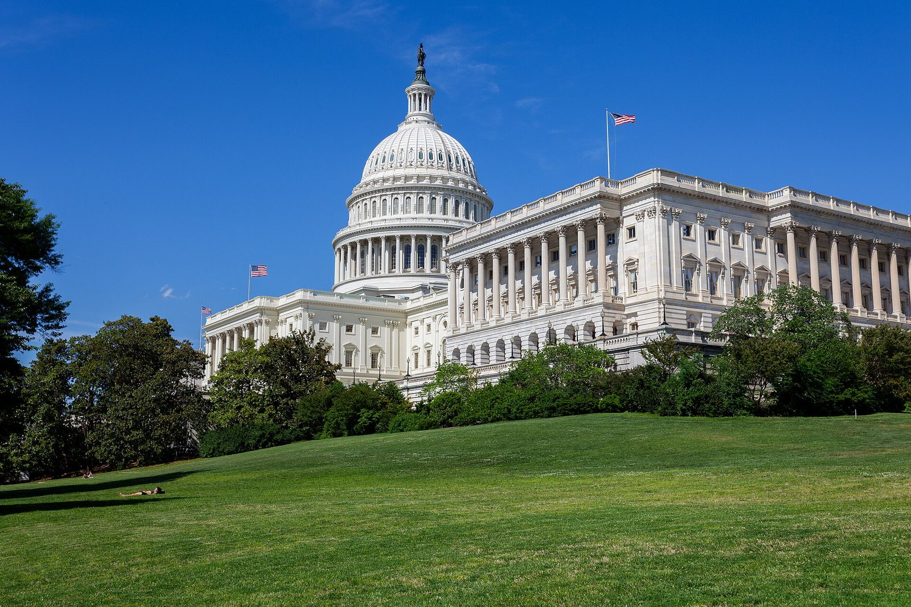

Wall Street ha chiuso il 4 novembre 2026 con il rialzo più ampio dell'anno. Il Dow Jones ha guadagnato 1.569,40 punti (+3,03%) fermandosi a 53.356,12: è la migliore giornata dal 9 aprile 2025 e il ritorno sopra quota 53.000 per la prima volta dall'8 settembre. L'S&P 500 è salito dell'1,58% a 7.688,62, il Nasdaq Composite dell'1,44% a 25.736,51. L'indice della volatilità VIX è sceso del 16% e i rendimenti obbligazionari sono calati insieme al petrolio.
Perché conta: il mercato non ha festeggiato un vincitore, ha festeggiato la fine dell'incertezza. Durante la notte i contratti futures erano scesi, poi hanno invertito rotta quando è diventato chiaro che il risultato era netto e che non ci sarebbe stata una contestazione. Capire questa differenza aiuta a non confondere l'entusiasmo di una giornata con un giudizio sulle politiche.
La reazione in cifre
| Indicatore | Movimento del 4 novembre | Nota |
|---|---|---|
| Dow Jones | 53.356,12 · +1.569,40 pt (+3,03%) | migliore giornata dal 9 aprile 2025 |
| S&P 500 | 7.688,62 · +1,58% | |
| Nasdaq Composite | 25.736,51 · +1,44% | |
| VIX (indice della volatilità) | −16% | meno paura sul mercato |
| Rendimenti obbligazionari | in calo | attese di minore spesa pubblica |
| Petrolio | in calo | contribuisce al clima positivo |
Valori di chiusura. Il rialzo del Dow corrisponde esattamente alla somma dei 1.569,40 punti guadagnati sulla chiusura precedente di 51.786,72.
💡 Impara: che cos'è il VIX e perché un suo calo conta
Il VIX misura quanta oscillazione gli operatori si aspettano sull'S&P 500 nei trenta giorni successivi, ricavandola dai prezzi delle opzioni. Viene chiamato «indice della paura» perché sale quando cresce il nervosismo e scende quando il mercato si tranquillizza. Un calo del 16% in una sola giornata indica che una fonte di incertezza è stata rimossa — in questo caso il rischio di un esito elettorale contestato o ambiguo. È un dato utile proprio perché non dice nulla sulla direzione futura dei prezzi: misura la tensione, non l'ottimismo.
Non tutti i titoli sono saliti
Dietro il rialzo generale si è mossa una rotazione precisa. I titoli delle energie rinnovabili e della sanità sono stati fra i migliori già prima dell'apertura. Sono scesi invece i produttori di chip e le società legate ai centri dati, pur in un mercato in forte rialzo.
La logica è leggibile. Un Congresso democratico rende più probabile il sostegno pubblico alle rinnovabili e riduce il rischio di tagli alla spesa sanitaria. Sul fronte opposto, il comparto dell'intelligenza artificiale aveva corso molto sull'aspettativa di un contesto regolatorio permissivo e di investimenti pubblici in infrastrutture: un Congresso diverso introduce quantomeno un'incognita in più.
💡 Impara: separare l'indice dai settori
Quando si legge che «la borsa è salita del 2%», quel numero è una media ponderata di centinaia di titoli che possono essersi mossi in direzioni opposte. In giornate guidate da un evento politico la dispersione è particolarmente alta: alcuni settori guadagnano diversi punti percentuali, altri perdono, e la media racconta poco di entrambi. Per un investitore la domanda utile non è «quanto ha fatto l'indice» ma «in quale metà del listino si trova quello che ho in portafoglio» — perché è lì che si decide il risultato effettivo.
Che cosa dicono i precedenti storici
Esiste una regolarità storica che vale la pena conoscere, con tutte le cautele del caso. Secondo le analisi di Morgan Stanley, nell'anno solare successivo a elezioni di metà mandato con un presidente repubblicano, l'S&P 500 ha guadagnato in media circa il 16% quando i democratici controllavano entrambe le camere, e circa il 23% quando il controllo del Congresso era diviso.
Sono medie calcolate su un numero limitato di casi, e non costituiscono una previsione: ogni ciclo ha condizioni economiche proprie. La spiegazione più accreditata di questa regolarità non è politica ma pratica — dopo le elezioni di metà mandato una fonte di incertezza si chiude per due anni, e i mercati scontano meglio uno scenario noto, anche se non favorevole, che uno ignoto.
💡 Impara: perché le medie storiche vanno maneggiate con cura
Le statistiche sui rendimenti medi dopo un evento ricorrente — elezioni, mesi dell'anno, cicli dei tassi — si basano quasi sempre su poche decine di osservazioni. Con campioni così piccoli, un singolo anno eccezionale può spostare la media di parecchi punti. Inoltre non esiste un meccanismo che costringa la storia a ripetersi: il contesto di partenza, il livello delle valutazioni, i tassi d'interesse e gli shock esterni cambiano ogni volta. Sono indicazioni di contesto, utili a inquadrare una situazione, non previsioni su cui costruire decisioni.
Che cosa aspettarsi adesso
Dalle analisi delle principali case d'investimento emergono quattro temi per i prossimi mesi.
1. Lo stallo legislativo diventa lo scenario base. Con il nuovo Congresso insediato a gennaio 2027, le grandi riforme fiscali e di spesa escono dall'orizzonte. Per i mercati significa un quadro normativo stabile — e la fine delle scommesse su nuovi incentivi settoriali.
2. La rotazione settoriale continuerà a essere il tema. Le analisi pre-elettorali di BNY indicavano difesa, energia, sanità e attività digitali come i comparti più esposti alle decisioni politiche, con la sanità come terreno più probabile di compromesso tra schieramenti diversi.
3. Il bilancio federale è il primo appuntamento vero. È il negoziato in cui una Casa Bianca e un Congresso di colori opposti devono necessariamente trovare un accordo. Storicamente è anche il punto in cui i blocchi dell'attività amministrativa si sono verificati.
4. Quello che non cambia pesa quanto quello che cambia. La politica monetaria resta alla Federal Reserve, i dazi e le decisioni di politica estera restano in larga parte all'esecutivo. Il conflitto con l'Iran, che ha condizionato il prezzo del petrolio per tutto l'anno, non passa per il Congresso.
Su quest'ultimo punto conviene citare due voci caute. Schwab ricorda che gli investitori sono generalmente serviti meglio restando concentrati sugli obiettivi di lungo periodo, e Christopher Hodge di Natixis osserva di non riuscire a immaginare una composizione del Congresso che modifichi davvero la traiettoria più ampia dei mercati o dell'economia.
📌 Da ricordare — 4 novembre 2026
Dow Jones 53.356,12 (+1.569,40 punti, +3,03%), migliore giornata dal 9 aprile 2025 e primo ritorno sopra 53.000 dall'8 settembre · S&P 500 7.688,62 (+1,58%) · Nasdaq Composite 25.736,51 (+1,44%) · VIX −16% · Rendimenti obbligazionari e petrolio in calo · I futures erano scesi durante la notte prima di invertire · Rinnovabili e sanità fra i migliori, in calo chip e società dei centri dati · Morgan Stanley: con presidente repubblicano, nell'anno successivo alle midterm l'S&P 500 ha reso in media circa il 16% con Congresso interamente democratico e circa il 23% con Congresso diviso · A Milano FTSE MIB +2,18% a 51.031, banche in testa e Prysmian −6,91% sui timori per i centri dati americani · Il nuovo Congresso si insedia a gennaio 2027
Nota metodologica: i valori di chiusura della seduta del 4 novembre 2026 provengono da fonti pubbliche di mercato e sono stati verificati per coerenza con le chiusure del giorno precedente: i 1.569,40 punti guadagnati dal Dow corrispondono esattamente alla differenza fra 53.356,12 e la chiusura del 3 novembre a 51.786,72. Una prima versione di questo articolo riportava valori infragiornalieri, aggiornati a chiusura avvenuta. Le medie storiche citate sono elaborazioni di Morgan Stanley su serie passate e non costituiscono previsioni. Questo articolo ha finalità informative ed educative e non costituisce consulenza finanziaria né raccomandazione su alcun titolo o settore.